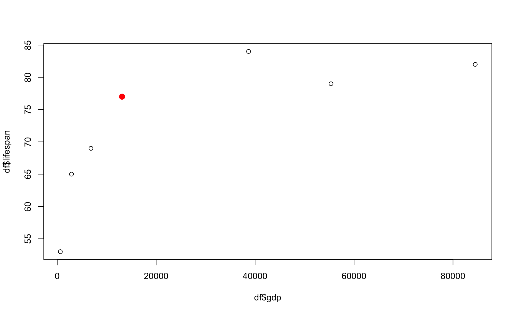
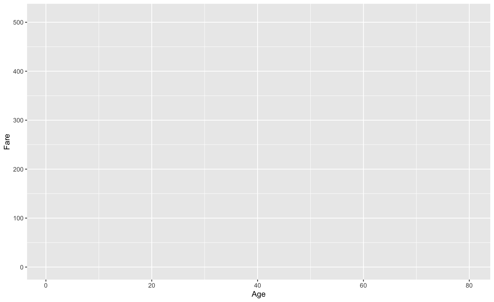
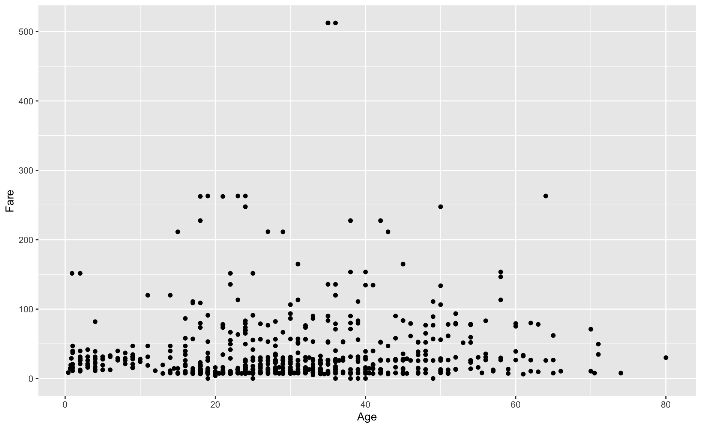
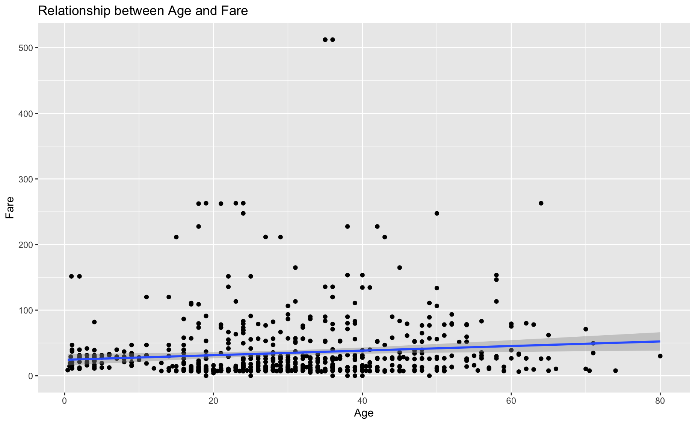

Module 29 for loops
Learning goals
- What
forloops are, and how to use them yourself - How to use
forloops for plots that are tricky but super cool. - How to use
forloops to summarize subgroups in your data - How to use nested
forloops
Basics
A for loop is a super powerful coding tool. In a for loop, R loops through a chunk of code for a set number of repititions.
A super basic example:
[1] 1
[1] 2
[1] 3
[1] 4
[1] 5Here’s an example of a pretty useless for loop:
[1] "I'm just repeating myself."
[1] "I'm just repeating myself."
[1] "I'm just repeating myself."
[1] "I'm just repeating myself."
[1] "I'm just repeating myself."This code is saying:
- For each iteration of this loop, step to the next value in x (first example) or 1:5 (second example).
- Store that value in an object i,
- and run the code inside the curly brackets.
- Repeat until the end of x.
Look at the basic structure:
- In thefor( ) parenthetical, you tell R what values to step through (x), and how to refer to the value in each iteration (i).
- Within the curly brackets, you place the chunk of code you want to repeat.
Another basic example, demonsrating that you can update a variable repeatedly in a loop.
[1] 4
[1] 16
[1] 256
[1] 65536
[1] 4294967296Another silly example:
[1] "Keri is pretty cool!"
[1] "Deb is pretty cool!"
[1] "Ken is pretty cool!"Exercise 1
Use this space to practice the basics of for loop formatting.
First, create a vector of names (add at least 3)
Using the examples above as a guide, create a for loop that prints the same silly statement about each of these names.
[1] "Lady Gaga has cooties!"
[1] "David Haskell has cooties!"
[1] "Tom Cruise has cooties!"for loops in plots
These silly examples above do a poor job of demonstrating how powerful a for loop can be. You can use for loops with data to do really cool things with relatively simple code.
Thinking in for loops, however, can take some getting used to. Learning how to design code with for loops is one of the most important milestones on your way to thinking like a data scientist.
Efficient multi-panel plots
For example, a for loop can be a very efficient way of making multi-panel plots.
Let’s use a for loop to get a quick overview of the variables included in the airquality dataset built into R.
Ozone Solar.R Wind Temp Month Day
1 41 190 7.4 67 5 1
2 36 118 8.0 72 5 2
3 12 149 12.6 74 5 3
4 18 313 11.5 62 5 4
5 NA NA 14.3 56 5 5
6 28 NA 14.9 66 5 6Looks like the first four columns would be interesting to plot.
par(mfrow=c(2,2)) # Setup a multi-panel plot # format = c(number of rows, number of columns)
par(mar=c(4.5,4.5,1,1)) # Set plot margins
# Loop through the first four columns ...
for(i in 1:4){
y <- airquality[,i] # Select data in column i
var.name <- names(airquality)[i] # Get name of that column
plot(y,xlab="Day",ylab=var.name,pch=16) # Plot data
}
Using for loops to plot subgroups of data
for loops are also useful for plotting data in tricky ways. Let’s use a different built-in dataset, that shows the performance of various car make/models.
mpg cyl disp hp drat wt qsec vs am gear carb
Mazda RX4 21.0 6 160 110 3.90 2.620 16.46 0 1 4 4
Mazda RX4 Wag 21.0 6 160 110 3.90 2.875 17.02 0 1 4 4
Datsun 710 22.8 4 108 93 3.85 2.320 18.61 1 1 4 1
Hornet 4 Drive 21.4 6 258 110 3.08 3.215 19.44 1 0 3 1
Hornet Sportabout 18.7 8 360 175 3.15 3.440 17.02 0 0 3 2
Valiant 18.1 6 225 105 2.76 3.460 20.22 1 0 3 1Let’s say we want to see how gas mileage is affected by the number of cylinders a car has. It would be nice to create a plot that shows the raw data as well as the mean mileage for each cylinder number.
# Let's see how many different cylinder types there are in the data
ucyl <- unique(mtcars$cyl) ; ucyl[1] 6 4 8# Let's make an empty plot
plot(1,type="n", # tell R not to draw anything
xlim=c(2,10),ylim=c(0,50),
xlab="Number of cylinders",
ylab="Gas mileage (mpg)")
# Write your for loop here to add the actual data
i=ucyl[1] # It's always good to use a known value of i as you build up your for loop
for(i in ucyl){
# Subset the dataframe according to number of cylinders
cari <- mtcars[mtcars$cyl==i,]
# Plot the raw data
points(x=cari$cyl,y=cari$mpg,col="grey")
# Superimpose the mean on top
points(x=i,y=mean(cari$mpg),col="black",pch="-",cex=5,)
}
Exercise 3
Now try to do something similar on your own with the airquality dataset. Use for loops to create a plot with Month on the x axis and Temperature on the y axis. On this plot, depict all the temperatures recorded in each month in the color grey, then superimpose the mean temperature for each month.
We will provide the empty plot, you provide the for loop:
plot(1,type="n",
xlim=c(3,10),ylim=c(40,100),
xlab="Month",
ylab="Yemperature")
# Write your for loop here to add the actual data
for(i in airquality$Month){
airi <- airquality[airquality$Month==i,]
points(x=airi$Month,y=airi$Temp,pch=1,col="grey")
points(x=i,y=mean(airi$Temp),pch="-",cex=5,col="black")
}
Using for loops to layer cyclical or repetitive data
Here’s another good example of the power of a good for loop.
First, read in some cool data.
year month day_of_month day_of_year year_dec frac_of_year CO2
1 1974 5 26 145.4890 1974.399 0.3986 332.95
2 1974 6 2 152.4970 1974.418 0.4178 332.35
3 1974 6 9 159.5050 1974.437 0.4370 332.20
4 1974 6 16 166.5130 1974.456 0.4562 332.37
5 1974 6 23 173.4845 1974.475 0.4753 331.73
6 1974 6 30 180.4925 1974.495 0.4945 331.68This is the famous Keeling Curve dataset: long-term monitoring of atmospheric CO2 measured at a volcanic observatory in Hawaii.
Try plotting the Keeling Curve:

There are some erroneous data points! We clearly can’t have negative CO2 values. Let’s remove those and try again:

What’s the deal with those squiggles?
They seem to happen every year, cyclically. Let’s investigate!
Let’s look at the data a different way: by layering years on top of one another.
To begin, let’s plot data for only a single year:
# Stage an empty plot for what you are trying to represent
plot(1, # plot a single point
type="n",
xlim=c(0,365),xlab="Day of year",
ylim=c(-5,5),ylab="CO2 anomaly")
abline(h=0,col="grey") # add nifty horizontal line
# Reduce the dataset to a single year (any year)
kcy <- kc[kc$year=="1990",] ; head(kcy) year month day_of_month day_of_year year_dec frac_of_year CO2
816 1990 1 7 6.4970 1990.018 0.0178 353.58
817 1990 1 14 13.5050 1990.037 0.0370 353.99
818 1990 1 21 20.5130 1990.056 0.0562 353.92
819 1990 1 28 27.4845 1990.075 0.0753 354.39
820 1990 2 4 34.4925 1990.094 0.0945 355.04
821 1990 2 11 41.5005 1990.114 0.1137 355.09# Let's convert each CO2 reading to an 'anomaly' compared to the year's average.
CO2.mean <- mean(kcy$CO2,na.rm=TRUE) ; CO2.mean # Take note of how useful that 'na.rm=TRUE' input can be![1] 354.4538 [1] -0.87384615 -0.46384615 -0.53384615 -0.06384615 0.58615385 0.63615385
[7] 0.96615385 0.72615385 1.13615385 1.33615385 1.08615385 1.67615385
[13] 1.81615385 1.71615385 1.77615385 2.41615385 2.50615385 3.24615385
[19] 2.79615385 2.87615385 2.92615385 2.52615385 1.79615385 1.72615385
[25] 1.33615385 1.76615385 0.53615385 -0.16384615 -0.08384615 -0.46384615
[31] -1.28384615 -0.99384615 -1.37384615 -2.65384615 -3.29384615 -3.59384615
[37] -2.70384615 -2.99384615 -3.05384615 -2.91384615 -2.88384615 -2.72384615
[43] -2.05384615 -1.74384615 -1.30384615 -1.00384615 -0.76384615 -0.55384615
[49] 0.01615385 -0.11384615 0.37615385 0.34615385 NA
But this only shows one year of data! How can we include the seasonal squiggle from other years?
Let’s use a for loop!
OK – let’s redo that graph and add a for loop into the mix:
# First, stage your empty plot:
plot(1,type="n",
xlim=c(0,365),xlab="Day of year",
ylim=c(-5,5),ylab="CO2 anomaly")
abline(h=0,col="grey")
# Now we will loop through each year of data. First, get a vector of the years included in the dataset:
years <- unique(kc$year) ; years [1] "1974" "1975" "1976" "1977" "1978" "1979" "1980" "1981" "1982" "1983"
[11] "1984" "1985" "1986" "1987" "1988" "1989" "1990" "1991" "1992" "1993"
[21] "1994" "1995" "1996" "1997" "1998" "1999" "2000" "2001" "2002" "2003"
[31] "2004" "2005" "2006" "2007" "2008" "2009" "2010" "2011" "2012" "2013"
[41] "2014" "2015" "2016" "2017" "2018" "2019" "2020" "2021" NA # Now build your for loop.
# Notice that the contents of the `for loop` are exactly the same
# as the single plot above -- with one exception.
# Notice the use of the symbol i
for(i in years){
# Reduce the dataset to a single year
kcy <- kc[kc$year==i,] ; head(kcy)
# Let's convert each CO2 reading to an 'anomaly' compared to the year's average.
CO2.mean <- mean(kcy$CO2,na.rm=TRUE) ; CO2.mean # Get average CO2 for year
y <- kcy$CO2 - CO2.mean ; y # Translate each data point to an anomaly
# Add points to your plot
points(y~kcy$day_of_year,pch=16,col=adjustcolor("darkblue",alpha.f=.3))
}
Beautiful! So how do you interpret this graph? Why does the squiggle happen every year?
Using for loops to process & summarize data
Using for loops to summarize data subgroups
This is one of the most common uses of for loops: you want to summarize information about subgroups in your dataset.
Example use cases
You want to summarize sample counts for each day of fieldwork.
You want to summarize details for each user in your database.
You want to summarize weather information for each month of the year.
Workflow
All of these summaries can be achieved with the same basic workflow.
Determine how to define the basic unit of summarization (e.g., each day of fieldwork, each user in your database, or each month of the year).
Stage an empty data object (or multiple objects) in which you will store your summary.
Build a
forloop to iterate through for each unique subgroup value (e.g., each sampling date or each user or each month).In each iteration of the loop, subset your data to only the subgroup value of interest.
At the end of each iteration, update your data objects with the result from that iteration.
Run your `for loop!
After the
forloop, combine your data objects into a dataframe.
As you are building for loops, it can be very helpful to first start thinking about what needs to happen in each iteration of the loop. So first think about what needs to happen in Step 4. Then you go through each step of this workflow to build a loop around that core code.
Example
The following scenario provides a concrete example of how to do this:
Scenario: You participate in a survey of flightless birds in the forests of New Zealand. You conduct thirty days of fieldwork on four species of bird: the kiwi, the weka, the kakapo (the world’s heaviest parrot), and the kea (the world’s only alpine parrot).
Your data look like this:
[1] 406 day species group
1 1 Kiwi 3
2 1 Kea 4
3 1 Kakapo 4
4 1 Weka 2
5 1 Kiwi 1
6 1 Kea 3 day species group
401 30 Weka 3
402 30 Kiwi 3
403 30 Kiwi 3
404 30 Kakapo 3
405 30 Kakapo 1
406 30 Kea 2Each row contains the data for a single bird group detection.
Your supervisor has tasked you with writing a report of your findings, and she wants to see a table with the number of each species seen on each day of the fieldwork.
You can use a for loop to make this table.
But first think about what needs to happen in each iteration of your loop. For each date in the dataset, you want to count the number of sightings for each species.
Let’s build our core code using day 10 as a practice date:
# Subset to day of interest
dayi <- 10
dfi <- df[df$day == dayi,]
# Tally up counts for each species
kiwi <- length(which(dfi$species=="Kiwi"))
weka <- length(which(dfi$species=="Weka"))
kakapo <- length(which(dfi$species=="Kakapo"))
kea <- length(which(dfi$species=="Kea"))Okay! So our for loop needs to contain that basic code, with some minor adjustments in order to save the results from all iterations of the loop instead of just one.
Here is the full code for this for loop problem:
# 1: determine the unique days in the dataset:
udays <- unique(df$day)
# 2: stage empty results vectors
kiwi <- weka <- kakapo <- kea <- c()
# (create a variable named i to help you test your code as you build it)
i=1
# 3: Start for loop. Loop through each unique day
for(i in 1:length(udays)){
# 4. Subset to day of interest
dayi <- udays[i]
dfi <- df[df$day == dayi,]
# 5. Tally up birds, add to each vector
kiwi[i] <- length(which(dfi$species=="Kiwi"))
weka[i] <- length(which(dfi$species=="Weka"))
kakapo[i] <- length(which(dfi$species=="Kakapo"))
kea[i] <- length(which(dfi$species=="Kea"))
}
# 6. Run for loop
# 7. Combine results into a dataframe
results <- data.frame(day=udays, kiwi, weka, kakapo, kea)
# Check it out!
results day kiwi weka kakapo kea
1 1 5 6 3 3
2 2 1 3 1 2
3 3 2 4 5 3
4 4 2 3 2 0
5 5 6 6 3 2
6 6 6 2 3 6
7 7 3 1 3 7
8 8 2 6 2 2
9 9 4 1 1 1
10 10 2 0 3 3
11 11 2 2 3 5
12 12 2 3 4 4
13 13 3 3 5 1
14 14 7 3 4 6
15 15 3 4 4 5
16 16 4 2 1 4
17 17 3 4 6 2
18 18 3 4 1 1
19 19 4 6 1 6
20 20 2 6 3 1
21 21 4 3 5 6
22 22 4 2 5 5
23 23 4 6 2 4
24 24 1 2 5 2
25 25 4 6 3 1
26 26 4 2 3 5
27 27 8 5 6 7
28 28 8 1 0 2
29 29 6 1 1 3
30 30 4 2 3 4Nested for loops
Sometimes you need to summarize your data in such a specific way that you will need to use nested for loops, i.e., one for loop contained within another.
For example, your supervisor for the New Zealand Flightless Birds Survey has now taken an interest in associations among the four bird species you have been monitoring. For example, are kiwis more abundant on the days when you detect a lot of kakapos?
To answer this question, your supervisor wants to see a table with each species combination (Kiwi - Kakapo, Kiwi - Weka, … Kakapo - Kea, etc.) and the number of dates in which both species were seen more than 5 times.
You can produce this table using a nested for loop. Here is how it’s done:
uspp <- unique(df$species) # get set of unique species
A <- B <- c() # empty vector for names of each species in the pair
X <- c() # empty vector for number of dates in which both species were common
i=1 ; j=2
# For loop 1
for(i in 1:length(uspp)){
spi <- uspp[i] # species i
dfi <- df[df$species == spi,] # subset df to only this species
counti <- table(dfi$day) # get number of sightings on each day
dayi <- names(counti)[which(counti >= 5)] ; # get the dates on which this species was seen 5+ times
# For loop 2
for(j in 1:length(uspp)){
spj <- uspp[j] # species j
dfj <- df[df$species == spj,] # subset df to only this species
countj <- table(dfj$day) # get number of sightings on each day
dayj <- names(countj)[which(countj >= 5)] ; # get the dates on which this species was seen 5+ times
dates_ij <- which(dayi %in% dayj) # get the dates on which both species were seen 5+ times
Xij <- length(dates_ij) # count the number of these dates
# Add results to staged objects
X <- c(X,Xij)
A <- c(A,spi)
B <- c(B,spj)
}
}
# Combine results into a dataframe
results <- data.frame(A, B, X)
# Check it out!
results A B X
1 Kiwi Kiwi 7
2 Kiwi Kea 3
3 Kiwi Kakapo 1
4 Kiwi Weka 3
5 Kea Kiwi 3
6 Kea Kea 10
7 Kea Kakapo 3
8 Kea Weka 2
9 Kakapo Kiwi 1
10 Kakapo Kea 3
11 Kakapo Kakapo 7
12 Kakapo Weka 1
13 Weka Kiwi 3
14 Weka Kea 2
15 Weka Kakapo 1
16 Weka Weka 8Note that the code for adding the results to the staged objects X, A, and B is contained within the second for loop. This is necessary for producing our results; if we put that code in the first for loop after the code for the nested loop, our results would not be complete.
Note that each for loop must use a different variable to represent each iteration. In this example, the first loop uses i and the second uses j. If we used i for both loops, R would get very confused indeed.
Also note that we used i and j in the variables specific to each loop (e.g., dayi and dayj), as a simple way to help us keep track of what each variable is representing.
Exercise 2
Your supervisor is happy with your pairwise species association dataframe, and wants to use it in an analysis for a publication. However, the R package she wants to use requires that the data be in the format of a square matrix with four rows – one for each species – and four columns. Like this:
Kiwi Kea Kakapo Weka
Kiwi NA NA NA NA
Kea NA NA NA NA
Kakapo NA NA NA NA
Weka NA NA NA NAYou have not yet worked with matrices in this curriculum (you will in a few modules), but for now think of them as simple dataframes with a single type of data (e.g., all numeric values, like this one). You can subset matrices just as you would a dataframe: matrix[row,column].
The values in this matrix should represent the number of dates in which each species pair was seen 5 times or more. For example, result[1,2] would be 3, since the Kiwi and Kea were seen 5+ times on only 3 dates.
She asks you to use the dataframe you just created to create this matrix. Use a nested for loop to do it.
# Stage empty results objects
results_matrix <- matrix(data=NA, nrow=4, ncol=4, dimnames=list(uspp,uspp))
# Get unique species
uspp <- unique(c(results$A,results$B))
# Loop 1: each species (row)
for(i in 1:length(uspp)){
spi <- uspp[i]
resultsi <- results[results$A==spi,] # subset data to rows where column A equals species i
# Loop 2: each species (column)
for(j in 1:length(uspp)){
spj <- uspp[j]
resultsj <- resultsi[resultsi$B==spj,] # subset data from i loop where column B equals species j
Xij <- resultsj$X # Find result
results_matrix[i,j] <- Xij # Add result to staged object
}
}
results_matrix Kiwi Kea Kakapo Weka
Kiwi 7 3 1 3
Kea 3 10 3 2
Kakapo 1 3 7 1
Weka 3 2 1 8Boom!
Review assignment
First, read in and format some other cool data. The code for doing so is provided for you here:
This dataset, freely available from World Bank, shows the renewable electricity output for various countries, presented as a percentage of the nation’s total electricity output. They provide this data as a time series.
Summarize columns with a for loop
Task 1: Use a for loop to find the change in renewable energy output for each nation in the dataset between 1990 and 2015. Print the difference for each nation in the console.
# Write your code here
i=2
for(i in 2:ncol(df)){
dfi <- df[,i] ; dfi
diffi <- dfi[length(dfi)] - dfi[1] ; diffi
print(paste0(names(df)[i]," : ",round(diffi),"% change."))
}[1] "World : 3% change."
[1] "Australia : 4% change."
[1] "Canada : 1% change."
[1] "China : 4% change."
[1] "Denmark : 62% change."
[1] "India : -9% change."
[1] "Japan : 5% change."
[1] "New_Zealand : 0% change."
[1] "Sweden : 12% change."
[1] "Switzerland : 7% change."
[1] "United_Kingdom : 23% change."
[1] "United_States : 2% change."Task 2: Re-do this loop, but instead of printing the differences to the console, save them in a vector.
# Write your code here
diffs <- c()
i=2
for(i in 2:ncol(df)){
dfi <- df[,i] ; dfi
diffi <- dfi[length(dfi)] - dfi[1] ; diffi
diffs <- c(diffs,diffi)
}
diffs [1] 3.49241703 3.98181045 0.63273122 3.51887728 62.33064943 -9.14624362
[7] 4.73004321 0.07524008 12.26263811 7.21543884 23.01128298 1.69994636Multi-pane plots with for loops
Practice with a single plot
Task 3: First, get your bearings by figuring out how to use the df dataset to plot the time series for the United States, for the years 1990 - 2015. Label the x axis “Year” and the y axis “% Renewable”. Include the full name of the county as the main title for the plot.
# Write code here
dfi <- df[,c(1,13)]
plot(x=dfi[,1],
y=dfi[,2],
type="l",lwd=2,
xlim=c(1990,2015),ylim=c(0,100),
xlab="Year",ylab="% renewable",
main=names(dfi)[2])
Now loop it!
Task 4: Use that code as the foundation for building up a for loop that displays the same time series for every country in the dataset on a multi-pane graph that with 4 rows and 3 columns.
Now loop it in layers!
Task 5: Now try a different presentation. Instead of producing 12 different plots, superimpose the time series for each country on the same single plot.
To add some flare, highlight the USA curve by coloring it red and making it thicker.
par(mfrow=c(1,1))
plot(1,type="n",lwd=2,
xlim=c(1990,2015),ylim=c(0,100),
xlab="Year",ylab="% Renewable")
for(i in 2:ncol(df)){
dfi <- df[,c(1,i)] ; dfi
lines(dfi[,2]~dfi[,1],lwd=2,col=adjustcolor("black",alpha.f=.4))
}
lines(df$United_States~df$year,lwd=4,col="firebrick")